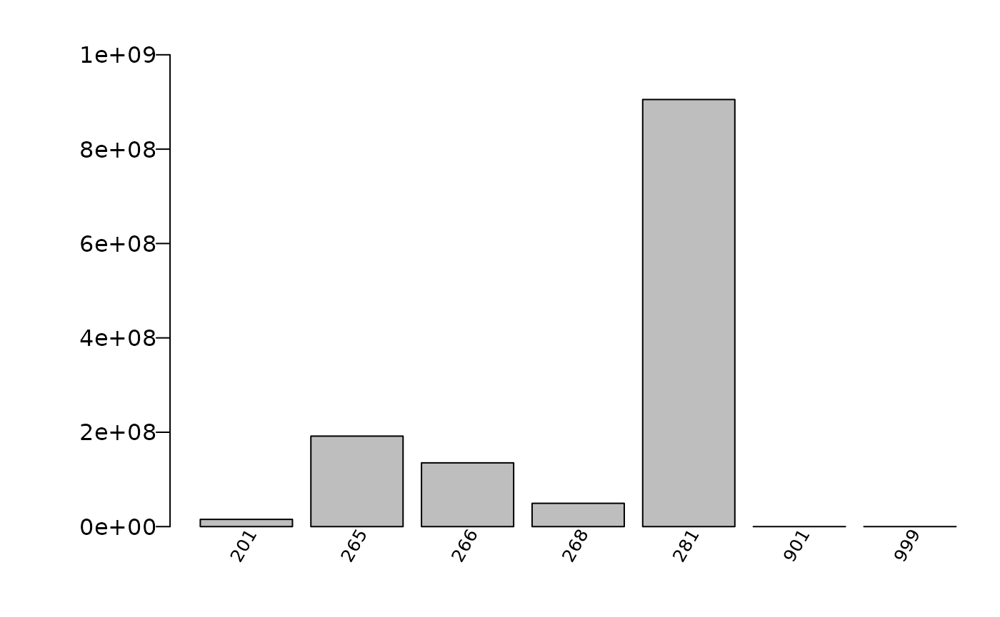
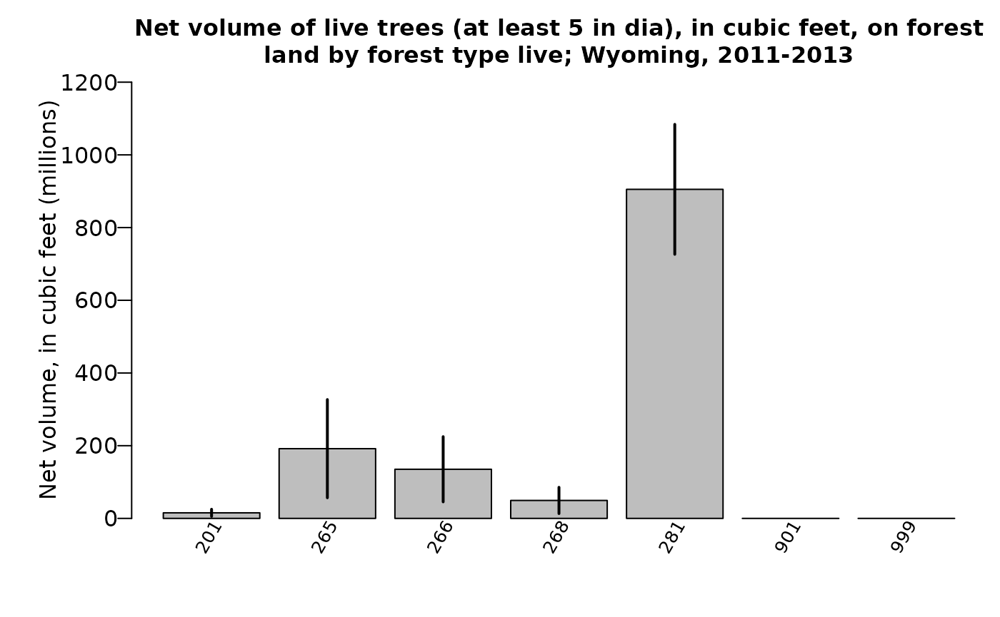

FIESTA_tutorial_MA.RmdFIESTA’s Model-Assisted (MA) module calculates
population estimates and their sampling errors by taking advantage of
available model-assisted survey estimators from the mase R
package (McConville, et al. 2018). These estimators can use a variety of
auxiliary data to build models and predict over a response variable of
interest, while using a bias-correction term so that the bias of the
model does not depend on model mis-specification.
Functions in FIESTA used for fitting model-assisted
estimators include the modMAarea function for area
estimates and modMAtree for tree estimates. The
modMApop function is used to get population data needed for
model-assisted estimation. Below is a description and table of contents
for the sections related to these functions:
| FUNCTION | DESCRIPTION |
|---|---|
| modMApop | Creates population data for model-assisted estimation. |
| modMAarea | Produces area level estimates through model-assisted estimation. |
| modMAtree | Produces tree level estimates through model-assisted estimation. |
The main objective of this tutorial is to demonstrate how to use
FIESTA for generating estimates using estimators from
mase. The model-assisted estimators can be used with FIA’s
standard state-level population data (i.e, Evaluation) from the FIA
database (FIADB) and also population data from a custom boundary.
The following examples are for generating estimates and estimated
variances using standard FIA Evaluation data from FIA’s National
database, with custom Estimation unit and Stratification information.
The examples use data from three inventory years of field measurements
in the state of Wyoming, from FIADB_1.7.2.00, last updated June 20,
2018, downloaded on June 25, 2018 and stored as internal data objects in
FIESTA.
| Data Frame | Description |
|---|---|
| WYplt | WY plot-level data |
| WYcond | WY condition-level data |
| WYtree | WY tree-level data |
| External data | Description |
|---|---|
| WYbighorn_adminbnd.shp | Polygon shapefile of WY Bighorn National Forest Administrative boundary* |
| WYbighorn_districtbnd.shp | Polygon shapefile of WY Bighorn National Forest District boundaries** |
| WYbighorn_forest_nonforest_250m.tif | GeoTIFF raster of predicted forest/nonforest (1/0) for stratification*** |
| WYbighorn_dem_250m.img | Erdas Imagine raster of elevation change, in meters**** |
*USDA Forest Service, Automated Lands Program (ALP). 2018. S_USA.AdministrativeForest (http://data.fs.usda.gov/geodata/edw). Description: An area encompassing all the National Forest System lands administered by an administrative unit. The area encompasses private lands, other governmental agency lands, and may contain National Forest System lands within the proclaimed boundaries of another administrative unit. All National Forest System lands fall within one and only one Administrative Forest Area.
**USDA Forest Service, Automated Lands Program (ALP). 2018. S_USA.RangerDistrict (http://data.fs.usda.gov/geodata/edw). Description: A depiction of the boundary that encompasses a Ranger District.
***Based on MODIS-based classified map resampled from 250m to 500m resolution and reclassified from 3 to 2 classes: 1:forest; 2:nonforest. Projected in Albers Conical Equal Area, Datum NAD27 (Ruefenacht et al. 2008). Clipped to extent of WYbighorn_adminbnd.shp.
****USGS National Elevation Dataset (NED), resampled from 30m resolution to 250m. Projected in Albers Conical Equal Area, Datum NAD27 (U.S. Geological Survey 2017). Clipped to boundary of WYbighorn_adminbnd.shp.
First, you’ll need to load the FIESTA library:
library(FIESTA)Next, you’ll need to set up an “outfolder”. This is just a file path
to a folder where you’d like FIESTA to send your data
output. For our purposes in this vignette, we have saved our outfolder
file path as the outfolder object in a temporary directory.
We also set a few default options preferred for this vignette.
Now that we’ve loaded FIESTA and setup our outfolder, we
can retrieve the data needed to run the examples. First, we point to
some external data and predictor layers stored in FIESTA
and derive new predictor layers using the raster
package.
# File names for external spatial data
WYbhfn <- system.file("extdata", "sp_data/WYbighorn_adminbnd.shp",
package = "FIESTA")
WYbhdistfn <- system.file("extdata", "sp_data/WYbighorn_districtbnd.shp",
package = "FIESTA")
## predictor variables
fornffn <- system.file("extdata", "sp_data/WYbighorn_forest_nonforest_250m.tif",
package = "FIESTA")
demfn <- system.file("extdata", "sp_data/WYbighorn_dem_250m.img",
package = "FIESTA")
# Derive new predictor layers from dem
library(raster)
dem <- raster(demfn)
slp <- terrain(dem,
opt = "slope",
unit = "degrees",
filename = paste0(outfolder, "/WYbh_slp.img"),
overwrite = TRUE)
asp <- terrain(dem,
opt = "aspect",
unit = "degrees",
filename = paste0(outfolder, "/WYbh_asp.img"),
overwrite = TRUE)Next, we can get our FIA plot data and set up our auxiliary data. We
can get our FIA plot data with the spMakeSpatialPoints
function from FIESTA. For more information on how to use
this function, please see the sp vignette included with
FIESTA (link).
WYspplt <- spMakeSpatialPoints(
xyplt = WYplt,
xy.uniqueid = "CN",
xvar = "LON_PUBLIC",
yvar = "LAT_PUBLIC",
prj = "longlat",
datum = "NAD83"
)
rastlst.cont <- c(demfn, slp, asp)
rastlst.cont.name <- c("dem", "slp", "asp")
rastlst.cat <- fornffn
rastlst.cat.name="fornf"Next, we must generate dataset for model-assisted estimation. We can
do this with the spGetAuxiliary function from
FIESTA. Again, see the sp vignette for further
information on this function.
modeldat <- spGetAuxiliary(
xyplt = WYspplt,
uniqueid = "CN",
unit_layer = WYbhfn,
unitvar = NULL,
rastlst.cont = rastlst.cont,
rastlst.cont.name = rastlst.cont.name,
rastlst.cat = rastlst.cat,
rastlst.cat.name = rastlst.cat.name,
rastlst.cont.stat = "mean",
asptransform = TRUE,
rast.asp = asp,
keepNA = FALSE,
showext = FALSE,
savedata = FALSE)
str(modeldat, max.level = 1)## List of 12
## $ pltassgn :'data.frame': 56 obs. of 25 variables:
## $ unitvar : chr "ONEUNIT"
## $ pltassgnid : chr "CN"
## $ unitarea :'data.frame': 1 obs. of 2 variables:
## $ areavar : chr "ACRES_GIS"
## $ unitzonal :'data.frame': 1 obs. of 8 variables:
## $ inputdf :Classes 'data.table' and 'data.frame': 4 obs. of 7 variables:
## ..- attr(*, ".internal.selfref")=<externalptr>
## $ prednames : chr [1:5] "dem" "slp" "asp_cos" "asp_sin" ...
## $ zonalnames : chr [1:6] "dem" "slp" "asp_cos" "asp_sin" ...
## $ predfac : chr "fornf"
## $ npixelvar : chr "npixels"
## $ predfac.levels:List of 1modMApop
modMApop
We can create our population data for model-assisted estimation. To
do so, we use the modMApop function in FIESTA.
We must assign our population tables with the popTabs
argument (and unique identifiers for these tables with the
popTabIDs argument if they are not the default), the plot
assignment with the pltassgn argument, and in auxiliary
dataset we just created with the auxdat argument. The
spGetAuxiliary function has done much of the hard work for
us so far, so we can just run a simple call to
modMApop:
MApopdat <- modMApop(popTabs = list(tree = WYtree, cond = WYcond),
pltassgn = WYpltassgn,
auxdat = modeldat)Note that the modMApop function returns a list with lots
of information and data for us to use. For a quick look at what this
list includes we can use the str function:
str(MApopdat, max.level = 1)## List of 26
## $ popType : chr "VOL"
## $ condx :Classes 'data.table' and 'data.frame': 66 obs. of 16 variables:
## ..- attr(*, "sorted")= chr [1:2] "PLT_CN" "CONDID"
## ..- attr(*, ".internal.selfref")=<externalptr>
## $ pltcondx :Classes 'data.table' and 'data.frame': 66 obs. of 40 variables:
## ..- attr(*, ".internal.selfref")=<externalptr>
## ..- attr(*, "sorted")= chr [1:2] "PLT_CN" "CONDID"
## $ cuniqueid : chr "PLT_CN"
## $ condid : chr "CONDID"
## $ ACI.filter : chr "COND_STATUS_CD == 1"
## $ unitarea :Classes 'data.table' and 'data.frame': 1 obs. of 2 variables:
## ..- attr(*, ".internal.selfref")=<externalptr>
## ..- attr(*, "sorted")= chr "ONEUNIT"
## $ areavar : chr "ACRES_GIS"
## $ areaunits : chr "acres"
## $ unitvar : chr "ONEUNIT"
## $ unitvars : chr "ONEUNIT"
## $ unitlut :Classes 'data.table' and 'data.frame': 1 obs. of 7 variables:
## ..- attr(*, ".internal.selfref")=<externalptr>
## ..- attr(*, "sorted")= chr "ONEUNIT"
## $ npixels :Classes 'data.table' and 'data.frame': 1 obs. of 2 variables:
## ..- attr(*, ".internal.selfref")=<externalptr>
## $ npixelvar : chr "npixels"
## $ prednames : chr [1:5] "dem" "slp" "asp_cos" "asp_sin" ...
## $ expcondtab : NULL
## $ plotsampcnt:Classes 'data.table' and 'data.frame': 2 obs. of 3 variables:
## ..- attr(*, ".internal.selfref")=<externalptr>
## ..- attr(*, "sorted")= chr "PLOT_STATUS_CD"
## $ condsampcnt:Classes 'data.table' and 'data.frame': 4 obs. of 3 variables:
## ..- attr(*, ".internal.selfref")=<externalptr>
## ..- attr(*, "sorted")= chr "COND_STATUS_CD"
## $ states : chr "Wyoming"
## $ invyrs :List of 1
## ..- attr(*, "dim")= int 1
## ..- attr(*, "dimnames")=List of 1
## ..- attr(*, "call")= language by.default(data = invyrtab$INVYR, INDICES = invyrtab$STATECD, FUN = I)
## ..- attr(*, "class")= chr "by"
## $ estvar.area: chr "CONDPROP_ADJ"
## $ adj : chr "plot"
## $ treex :Classes 'data.table' and 'data.frame': 1691 obs. of 21 variables:
## ..- attr(*, ".internal.selfref")=<externalptr>
## ..- attr(*, "sorted")= chr "PLT_CN"
## $ tuniqueid : chr "PLT_CN"
## $ adjtree : logi TRUE
## $ predfac : chr "fornf"Now that we’ve created our population dataset, we can move on to estimation.
modMAarea
In this example, we look at estimating the area of forest land in
Wyoming from 2011 to 2013 summed to the population unit
(sumunit = TRUE) with the generalized regression estimator
(MAmethod = "greg"). FIESTA returns raw data
for area of forest land, Wyoming, 2011-2013 (sum estimation units).
area1 <- modMAarea(
MApopdat = MApopdat, # pop - population calculations for WY, post-stratification
MAmethod = "greg", # est - model-assisted method
landarea = "FOREST", # est - forest land filter
)We can look at the structure of this output with str and
the estimates below. Note that again FIESTA outputs a
list.
str(area1, max.level = 2)## List of 4
## $ est :Classes 'data.table' and 'data.frame': 1 obs. of 3 variables:
## ..$ ONEUNIT : num 1
## ..$ Estimate : num 652879
## ..$ Percent Sampling Error: num 9.5
## ..- attr(*, ".internal.selfref")=<externalptr>
## ..- attr(*, "sorted")= chr "ONEUNIT"
## $ raw :List of 9
## ..$ unit_totest :'data.frame': 1 obs. of 18 variables:
## ..$ domdat :'data.frame': 66 obs. of 18 variables:
## ..$ module : chr "MA"
## ..$ esttype : chr "AREA"
## ..$ MAmethod : chr "greg"
## ..$ predselectlst:List of 1
## ..$ rowvar : chr "TOTAL"
## ..$ colvar : chr "NONE"
## ..$ areaunits : chr "acres"
## $ statecd: int 56
## $ invyr : int [1:3] 2011 2012 2013
area1$est## ONEUNIT Estimate Percent Sampling Error
## 1: 1 652879.1 9.5Here, we fit the same model as the above example, but rather than
using "greg" are our model-assisted method, we can use
"gregEN" where the EN stands for “elastic net”. The elastic
net performs variable selection for us, grabbing predictors it finds to
be most useful in the model.
area2 <- modMAarea(
MApopdat = MApopdat, # pop - population calculations for WY, post-stratification
MAmethod = "gregEN", # est - model-assisted method
landarea = "FOREST", # est - forest land filter
)We can again see that the structure of the list is very similar to that in the above example:
str(area2, max.level = 2)## List of 4
## $ est :Classes 'data.table' and 'data.frame': 1 obs. of 3 variables:
## ..$ ONEUNIT : num 1
## ..$ Estimate : num 668772
## ..$ Percent Sampling Error: num 10.5
## ..- attr(*, ".internal.selfref")=<externalptr>
## ..- attr(*, "sorted")= chr "ONEUNIT"
## $ raw :List of 9
## ..$ unit_totest :'data.frame': 1 obs. of 18 variables:
## ..$ domdat :'data.frame': 66 obs. of 18 variables:
## ..$ module : chr "MA"
## ..$ esttype : chr "AREA"
## ..$ MAmethod : chr "gregEN"
## ..$ predselectlst:List of 1
## ..$ rowvar : chr "TOTAL"
## ..$ colvar : chr "NONE"
## ..$ areaunits : chr "acres"
## $ statecd: int 56
## $ invyr : int [1:3] 2011 2012 2013However now the raw list has an item call
predselectlst. We can look at this item now:
area2$raw$predselectlst$totest## ONEUNIT TOTAL dem slp asp_cos asp_sin fornf2
## 1: 1 1 0 0 0 0 0Notably, we can see that dem, slp,
asp_cos, and asp_sin were removed from the
model.
In this example, we look at adding rows to the output and include returntitle=TRUE to return title information.
area3 <- modMAarea(
MApopdat = MApopdat, # pop - population calculations for WY, post-stratification
MAmethod = "greg", # est - model-assisted method
landarea = "FOREST", # est - forest land filter
rowvar = "FORTYPCD", # est - row domain
returntitle = TRUE # out - return title information
)Again, we can look at the contents of the output list. The output now includes titlelst, a list of associated titles.
str(area3, max.level = 1)## List of 5
## $ est :'data.frame': 8 obs. of 3 variables:
## $ titlelst:List of 9
## $ raw :List of 10
## $ statecd : int 56
## $ invyr : int [1:3] 2011 2012 2013And the estimates:
## Estimate and percent sampling error of estimate
area3$est## Forest type Estimate Percent Sampling Error
## 1 201 40571.7 63.78
## 2 265 47531.9 67.75
## 3 266 69659.5 43.89
## 4 268 41493.7 65.41
## 5 281 405267 16.16
## 6 901 24630 78.88
## 7 999 23725.4 71.82
## 8 Total 652879.1 9.5Along with raw data and titles:
## Raw data (list object) for estimate
raw3 <- area3$raw # extract raw data list object from output
names(raw3)## [1] "unit_totest" "unit_rowest" "domdat" "module"
## [5] "esttype" "MAmethod" "predselectlst" "rowvar"
## [9] "colvar" "areaunits"
head(raw3$unit_totest) # estimates by estimation unit (i.e., ESTN_UNIT)## ONEUNIT nhat nhat.var NBRPLT NBRPLT.gt0 ACRES_GIS AREAUSED est
## 1 1 0.5869038 0.003106112 56 37 1112412 1112412 652879.1
## est.var est.se est.cv pse CI99left CI99right CI95left CI95right
## 1 3843693079 61997.52 0.0949602 9.49602 493184 812574.1 531366.2 774392
## CI68left CI68right
## 1 591225.1 714533
raw3$totest # estimates for population (i.e., WY)## NULL
head(raw3$unit_rowest) # estimates by row, by estimation unit (i.e., ESTN_UNIT)## ONEUNIT Forest type nhat nhat.var NBRPLT NBRPLT.gt0 ACRES_GIS
## 1 1 201 0.03647179 0.0005411728 56 2 1112412
## 2 1 265 0.04272865 0.0008381084 56 4 1112412
## 3 1 266 0.06262026 0.0007554881 56 5 1112412
## 4 1 268 0.03730062 0.0005953475 56 3 1112412
## 5 1 281 0.36431363 0.0034662251 56 23 1112412
## 6 1 901 0.02214103 0.0003050492 56 1 1112412
## AREAUSED est est.var est.se est.cv pse CI99left CI99right
## 1 1112412 40571.67 669680321 25878.18 0.6378387 63.78387 0.0 107229.45
## 2 1112412 47531.88 1037126698 32204.45 0.6775337 67.75337 0.0 130485.05
## 3 1112412 69659.55 934887295 30575.93 0.4389338 43.89338 0.0 148417.91
## 4 1112412 41493.67 736719478 27142.58 0.6541378 65.41378 0.0 111408.31
## 5 1112412 405266.98 4289319257 65492.89 0.1616043 16.16043 236568.5 573965.50
## 6 1112412 24629.95 377486546 19429.01 0.7888367 78.88367 0.0 74675.78
## CI95left CI95right CI68left CI68right
## 1 0.000 91291.97 14836.907 66306.43
## 2 0.000 110651.44 15505.908 79557.85
## 3 9731.831 129587.26 39253.075 100066.02
## 4 0.000 94692.14 14501.519 68485.82
## 5 276903.270 533630.70 340137.060 470396.91
## 6 0.000 62710.12 5308.619 43951.29
head(raw3$rowest) # estimates by row for population (i.e., WY)## NULL
## Titles (list object) for estimate
titlelst3 <- area3$titlelst
names(titlelst3)## [1] "title.estpse" "title.unitvar" "title.ref" "outfn.estpse"
## [5] "outfn.rawdat" "outfn.param" "title.rowvar" "title.row"
## [9] "title.unitsn"
titlelst3## $title.estpse
## [1] "Area, in acres, and percent sampling error on forest land by forest type"
##
## $title.unitvar
## [1] "ONEUNIT"
##
## $title.ref
## [1] ", 2011-2013"
##
## $outfn.estpse
## [1] "area_FORTYPCD_forestland"
##
## $outfn.rawdat
## [1] "area_FORTYPCD_forestland_rawdata"
##
## $outfn.param
## [1] "area_FORTYPCD_forestland_parameters"
##
## $title.rowvar
## [1] "Forest type"
##
## $title.row
## [1] "Area, in acres, on forest land by forest type; , 2011-2013"
##
## $title.unitsn
## [1] "acres"In this example, we look at adding rows and columns to output,
including FIA names. We also output estimates and percent standard error
in the same cell with the allin1 argument in
table_options and save data to an outfolder with the
outfolder argument in savedata_options.
## Area of forest land by forest type and stand-size class, Wyoming, 2011-2013
area4 <- modMAarea(
MApopdat = MApopdat, # pop - population calculations for WY, post-stratification
MAmethod = "greg", # est - model-assisted method
landarea = "FOREST", # est - forest land filter
rowvar = "FORTYPCD", # est - row domain
colvar = "STDSZCD", # est - column domain
savedata = TRUE, # out - save data to outfolder
returntitle = TRUE, # out - return title information
table_opts = list(
row.FIAname = TRUE, # table - row domain names
col.FIAname = TRUE, # table - column domain names
allin1 = TRUE # table - return output with est(pse)
),
savedata_opts = list(
outfolder = outfolder, # save - outfolder for saving data
outfn.pre = "WY" # save - prefix for output files
)
)
area4$est## Forest type Large diameter Medium diameter
## 1: Douglas-fir 20,818.8 ( 88.90) -- ( --)
## 2: Engelmann spruce 36,018.2 ( 75.72) 11,513.7 (166.87)
## 3: Engelmann spruce / subalpine fir 40,505.6 ( 68.21) 13,493.7 ( 71.15)
## 4: Subalpine fir 26,591.2 ( 74.25) -- ( --)
## 5: Lodgepole pine 141,979.7 ( 32.74) 226,859.2 ( 20.99)
## 6: Aspen -- ( --) -- ( --)
## 7: Nonstocked -- ( --) -- ( --)
## 8: Total 265,913.6 ( 20.96) 251,866.5 ( 19.91)
## Small diameter Nonstocked Total
## 1: 19,752.9 ( 97.00) -- ( --) 40,571.7 ( 63.78)
## 2: -- ( --) -- ( --) 47,531.9 ( 67.75)
## 3: 15,660.3 ( 74.24) -- ( --) 69,659.5 ( 43.89)
## 4: 14,902.5 (126.22) -- ( --) 41,493.7 ( 65.41)
## 5: 36,428.1 ( 74.65) -- ( --) 405,267.0 ( 16.16)
## 6: 24,630.0 ( 78.88) -- ( --) 24,630.0 ( 78.88)
## 7: -- ( --) 23,725.4 ( 71.82) 23,725.4 ( 71.82)
## 8: 111,373.6 ( 37.11) 23,725.4 ( 71.82) 652,879.1 ( 9.50)We can again look at the output list, estimates, raw data, and titles:
## Look at output list
names(area4)## [1] "est" "pse" "titlelst" "raw" "statecd" "invyr"
## Estimate and percent sampling error of estimate
head(area4$est)## Forest type Large diameter Medium diameter
## 1: Douglas-fir 20,818.8 ( 88.90) -- ( --)
## 2: Engelmann spruce 36,018.2 ( 75.72) 11,513.7 (166.87)
## 3: Engelmann spruce / subalpine fir 40,505.6 ( 68.21) 13,493.7 ( 71.15)
## 4: Subalpine fir 26,591.2 ( 74.25) -- ( --)
## 5: Lodgepole pine 141,979.7 ( 32.74) 226,859.2 ( 20.99)
## 6: Aspen -- ( --) -- ( --)
## Small diameter Nonstocked Total
## 1: 19,752.9 ( 97.00) -- ( --) 40,571.7 ( 63.78)
## 2: -- ( --) -- ( --) 47,531.9 ( 67.75)
## 3: 15,660.3 ( 74.24) -- ( --) 69,659.5 ( 43.89)
## 4: 14,902.5 (126.22) -- ( --) 41,493.7 ( 65.41)
## 5: 36,428.1 ( 74.65) -- ( --) 405,267.0 ( 16.16)
## 6: 24,630.0 ( 78.88) -- ( --) 24,630.0 ( 78.88)
## Raw data (list object) for estimate
raw4 <- area4$raw # extract raw data list object from output
names(raw4)## [1] "unit_totest" "unit_rowest" "unit_colest" "unit_grpest"
## [5] "domdat" "module" "esttype" "MAmethod"
## [9] "predselectlst" "rowvar" "colvar" "areaunits"
head(raw4$unit_totest) # estimates by estimation unit (i.e., ESTN_UNIT)## ONEUNIT nhat nhat.var NBRPLT NBRPLT.gt0 ACRES_GIS AREAUSED est
## 1 1 0.5869038 0.003106112 56 37 1112412 1112412 652879.1
## est.var est.se est.cv pse CI99left CI99right CI95left CI95right
## 1 3843693079 61997.52 0.0949602 9.49602 493184 812574.1 531366.2 774392
## CI68left CI68right
## 1 591225.1 714533
head(raw4$totest) # estimates for population (i.e., WY)## NULL
head(raw4$unit_rowest) # estimates by row, by estimation unit (i.e., ESTN_UNIT)## ONEUNIT Forest type nhat nhat.var NBRPLT
## 1 1 Douglas-fir 0.03647179 0.0005411728 56
## 2 1 Engelmann spruce 0.04272865 0.0008381084 56
## 3 1 Engelmann spruce / subalpine fir 0.06262026 0.0007554881 56
## 4 1 Subalpine fir 0.03730062 0.0005953475 56
## 5 1 Lodgepole pine 0.36431363 0.0034662251 56
## 6 1 Aspen 0.02214103 0.0003050492 56
## NBRPLT.gt0 FORTYPCD ACRES_GIS AREAUSED est est.var est.se
## 1 2 201 1112412 1112412 40571.67 669680321 25878.18
## 2 4 265 1112412 1112412 47531.88 1037126698 32204.45
## 3 5 266 1112412 1112412 69659.55 934887295 30575.93
## 4 3 268 1112412 1112412 41493.67 736719478 27142.58
## 5 23 281 1112412 1112412 405266.98 4289319257 65492.89
## 6 1 901 1112412 1112412 24629.95 377486546 19429.01
## est.cv pse CI99left CI99right CI95left CI95right CI68left
## 1 0.6378387 63.78387 0.0 107229.45 0.000 91291.97 14836.907
## 2 0.6775337 67.75337 0.0 130485.05 0.000 110651.44 15505.908
## 3 0.4389338 43.89338 0.0 148417.91 9731.831 129587.26 39253.075
## 4 0.6541378 65.41378 0.0 111408.31 0.000 94692.14 14501.519
## 5 0.1616043 16.16043 236568.5 573965.50 276903.270 533630.70 340137.060
## 6 0.7888367 78.88367 0.0 74675.78 0.000 62710.12 5308.619
## CI68right
## 1 66306.43
## 2 79557.85
## 3 100066.02
## 4 68485.82
## 5 470396.91
## 6 43951.29
head(raw4$rowest) # estimates by row for population (i.e., WY)## NULL
head(raw4$unit_colest) # estimates by column, by estimation unit (i.e., ESTN_UNIT)## ONEUNIT Stand-size class nhat nhat.var NBRPLT NBRPLT.gt0 STDSZCD
## 1 1 Large diameter 0.23904227 0.0025112040 56 18 1
## 2 1 Medium diameter 0.22641470 0.0020314706 56 14 2
## 3 1 Small diameter 0.10011901 0.0013802129 56 6 3
## 4 1 Nonstocked 0.02132785 0.0002346171 56 1 5
## ACRES_GIS AREAUSED est est.var est.se est.cv pse
## 1 1112412 1112412 265913.57 3107517566 55745.11 0.2096362 20.96362
## 2 1112412 1112412 251866.51 2513866163 50138.47 0.1990676 19.90676
## 3 1112412 1112412 111373.62 1707959965 41327.47 0.3710706 37.10706
## 4 1112412 1112412 23725.36 290329511 17039.06 0.7181790 71.81790
## CI99left CI99right CI95left CI95right CI68left CI68right
## 1 122323.677 409503.47 156655.16 375171.98 210477.405 321349.74
## 2 122718.373 381014.65 153596.92 350136.11 202005.916 301727.11
## 3 4921.104 217826.13 30373.26 192373.98 70275.187 152472.05
## 4 0.000 67615.07 0.00 57121.31 6780.738 40669.99
head(raw4$colest) # estimates by column for population (i.e., WY)## NULL
head(raw4$unit_grpest) # estimates by row and column, by estimation unit (i.e., ESTN_UNIT)## ONEUNIT grpvar nhat
## 1 1 Douglas-fir#Large diameter 0.01871500
## 2 1 Douglas-fir#Small diameter 0.01775679
## 3 1 Engelmann spruce#Large diameter 0.03237848
## 4 1 Engelmann spruce#Medium diameter 0.01035017
## 5 1 Engelmann spruce / subalpine fir#Large diameter 0.03641240
## 6 1 Engelmann spruce / subalpine fir#Medium diameter 0.01213010
## nhat.var NBRPLT NBRPLT.gt0 Forest type
## 1 0.00027683279 56 1 Douglas-fir
## 2 0.00029669836 56 1 Douglas-fir
## 3 0.00060114345 56 3 Engelmann spruce
## 4 0.00029830747 56 1 Engelmann spruce
## 5 0.00061687748 56 3 Engelmann spruce / subalpine fir
## 6 0.00007448711 56 1 Engelmann spruce / subalpine fir
## Stand-size class STDSZCD FORTYPCD ACRES_GIS AREAUSED est est.var
## 1 Large diameter 1 201 1112412 1112412 20818.79 342569845
## 2 Small diameter 3 201 1112412 1112412 19752.88 367152725
## 3 Large diameter 1 265 1112412 1112412 36018.22 743891721
## 4 Medium diameter 2 265 1112412 1112412 11513.66 369143933
## 5 Large diameter 1 266 1112412 1112412 40505.61 763361972
## 6 Medium diameter 2 266 1112412 1112412 13493.67 92174912
## est.se est.cv pse CI99left CI99right CI95left CI95right
## 1 18508.642 0.8890353 88.90353 0 68493.90 0 57095.07
## 2 19161.230 0.9700476 97.00476 0 69108.93 0 57308.20
## 3 27274.378 0.7572384 75.72384 0 106272.36 0 89475.02
## 4 19213.119 1.6687242 166.87242 0 61003.37 0 49170.68
## 5 27629.006 0.6821032 68.21032 0 111673.21 0 94657.47
## 6 9600.777 0.7115023 71.15023 0 38223.63 0 32310.85
## CI68left CI68right
## 1 2412.7290 39224.86
## 2 697.8393 38807.91
## 3 8895.0001 63141.44
## 4 0.0000 30620.29
## 5 13029.7260 67981.49
## 6 3946.1018 23041.24
head(raw4$grpest) # estimates by row and column for population (i.e., WY)## NULL
## Titles (list object) for estimate
titlelst4 <- area4$titlelst
names(titlelst4)## [1] "title.estpse" "title.unitvar" "title.ref" "outfn.estpse"
## [5] "outfn.rawdat" "outfn.param" "title.rowvar" "title.row"
## [9] "title.colvar" "title.col" "title.unitsn"
titlelst4## $title.estpse
## [1] "Area, in acres (percent sampling error), by forest type and stand-size class on forest land"
##
## $title.unitvar
## [1] "ONEUNIT"
##
## $title.ref
## [1] ", 2011-2013"
##
## $outfn.estpse
## [1] "WY_area_FORTYPNM_STDSZNM_forestland"
##
## $outfn.rawdat
## [1] "WY_area_FORTYPNM_STDSZNM_forestland_rawdata"
##
## $outfn.param
## [1] "WY_area_FORTYPNM_STDSZNM_forestland_parameters"
##
## $title.rowvar
## [1] "Forest type"
##
## $title.row
## [1] "Area, in acres (percent sampling error), by forest type on forest land; , 2011-2013"
##
## $title.colvar
## [1] "Stand-size class"
##
## $title.col
## [1] "Area, in acres (percent sampling error), by stand-size class on forest land; , 2011-2013"
##
## $title.unitsn
## [1] "acres"
## List output files in outfolder
list.files(outfolder, pattern = "WY_area")## [1] "WY_area_FORTYPNM_STDSZNM_forestland_modMA_mase_greg.csv"
list.files(paste0(outfolder, "/rawdata"), pattern = "WY_area")## [1] "WY_area_FORTYPNM_STDSZNM_forestland_rawdata_modMA_mase_greg_domdat.csv"
## [2] "WY_area_FORTYPNM_STDSZNM_forestland_rawdata_modMA_mase_greg_unit_colest.csv"
## [3] "WY_area_FORTYPNM_STDSZNM_forestland_rawdata_modMA_mase_greg_unit_grpest.csv"
## [4] "WY_area_FORTYPNM_STDSZNM_forestland_rawdata_modMA_mase_greg_unit_rowest.csv"
## [5] "WY_area_FORTYPNM_STDSZNM_forestland_rawdata_modMA_mase_greg_unit_totest.csv"modMAtree
We will set our estimate variable and filter now. We set
estvar to "VOLCFNET" for net cubic foot
volume, and filter with estvar.filter set to
"STATUSCD == 1" so we only consider live trees in our
estimation.
estvar <- "VOLCFNET"
live_trees <- "STATUSCD == 1"We now will generate estimates by estimation unit (i.e., ESTN_UNIT)
and sum to population (i.e., WY) with modMAtree.
## Return raw data and titles
## Total net cubic-foot volume of live trees (at least 5 inches diameter), Wyoming, 2011-2013
tree1 <- modMAtree(
MApopdat = MApopdat, # pop - population calculations
MAmethod = "greg", # est - model-assisted method
landarea = "FOREST", # est - forest land filter
estvar = estvar, # est - net cubic-foot volume
estvar.filter = live_trees, # est - live trees only
returntitle = TRUE # out - return title information
)
names(tree1)## [1] "est" "titlelst" "raw" "statecd" "invyr"
tree1$raw$unit_totest## ONEUNIT nhat nhat.var NBRPLT NBRPLT.gt0 ACRES_GIS AREAUSED est
## 1 1 1170.147 29677.11 56 34 1112412 1112412 1301686384
## est.var est.se est.cv pse CI99left CI99right CI95left
## 1 36724278940778048 191635798 0.1472212 14.72212 808065281 1795307487 926087122
## CI95right CI68left CI68right
## 1 1677285646 1111112654 1492260114Here, we fit the same model as the above example, but rather than
using "greg" are our model-assisted method, we can use
"gregEN" where the EN stands for “elastic net”. The elastic
net performs variable selection for us, grabbing predictors it finds to
be most useful in the model.
## Return raw data and titles
## Total net cubic-foot volume of live trees (at least 5 inches diameter), Wyoming, 2011-2013
tree2 <- modMAtree(
MApopdat = MApopdat, # pop - population calculations
MAmethod = "gregEN", # est - model-assisted method
landarea = "FOREST", # est - forest land filter
estvar = estvar, # est - net cubic-foot volume
estvar.filter = live_trees, # est - live trees only
returntitle = TRUE # out - return title information
)We can again see that the structure of the list is very similar to that in the above example:
str(tree2, max.level = 2)## List of 5
## $ est :Classes 'data.table' and 'data.frame': 1 obs. of 3 variables:
## ..$ ONEUNIT : num 1
## ..$ Estimate : num 1326775889
## ..$ Percent Sampling Error: num 14.5
## ..- attr(*, ".internal.selfref")=<externalptr>
## ..- attr(*, "sorted")= chr "ONEUNIT"
## $ titlelst:List of 10
## ..$ title.estpse : chr "Net volume of live trees (at least 5 in dia), in cubic feet, and percent sampling error on forest land live"
## ..$ title.yvar : chr "Net volume, in cubic feet"
## ..$ title.estvar : chr "Net volume of live trees (at least 5 in dia)"
## ..$ title.unitvar: chr "ONEUNIT"
## ..$ title.ref : chr "Wyoming, 2011-2013"
## ..$ outfn.estpse : chr "tree_VOLCFNET_live_forestland"
## ..$ outfn.rawdat : chr "tree_VOLCFNET_live_forestland_rawdata"
## ..$ outfn.param : chr "tree_VOLCFNET_live_forestland_parameters"
## ..$ title.tot : chr "Net volume of live trees (at least 5 in dia), in cubic feet, on forest land live; Wyoming, 2011-2013"
## ..$ title.unitsn : chr "cubic feet"
## $ raw :List of 13
## ..$ unit_totest :'data.frame': 1 obs. of 18 variables:
## ..$ domdat :'data.frame': 66 obs. of 18 variables:
## ..$ plotweights :List of 1
## ..$ estvar : chr "VOLCFNET"
## ..$ estvar.filter: chr "STATUSCD == 1"
## ..$ module : chr "MA"
## ..$ esttype : chr "TREE"
## ..$ MAmethod : chr "gregEN"
## ..$ predselectlst:List of 1
## ..$ rowvar : chr "TOTAL"
## ..$ colvar : chr "NONE"
## ..$ areaunits : chr "acres"
## ..$ estunits : num 1
## $ statecd : int 56
## $ invyr : int [1:3] 2011 2012 2013However now the raw list has an item call
predselectlst. We can look at this item now:
tree2$raw$predselectlst## $totest
## ONEUNIT TOTAL dem slp asp_cos asp_sin fornf2
## 1: 1 1 0.670842 -70.64631 0 -600.5856 -1355.323Notably, we can see that [INSERT CORRECT PREDS] dem,
slp, asp_cos, and asp_sin were
removed from the model.
This example adds rows to the output for net cubic-foot volume of
live trees (at least 5 inches diameter) by forest type, Wyoming,
2011-2013. We also choose to return titles with
returntitle = TRUE.
tree3 <- modMAtree(
MApopdat = MApopdat, # pop - population calculations
MAmethod = "greg", # est - model-assisted method
landarea = "FOREST", # est - forest land filter
estvar = "VOLCFNET", # est - net cubic-foot volume
estvar.filter = "STATUSCD == 1", # est - live trees only
rowvar = "FORTYPCD", # est - row domain
returntitle = TRUE # out - return title information
)Again, we investigate the output of the returned list:
## Look at output list
names(tree3)## [1] "est" "titlelst" "raw" "statecd" "invyr"
## Estimate and percent sampling error of estimate
tree3$est## Forest type Estimate Percent Sampling Error
## 1 201 14128503.6 69.62
## 2 265 189616779.4 70.65
## 3 266 135785846.3 65.68
## 4 268 50176218.6 71.94
## 5 281 911979036.1 19.59
## 6 901 -- --
## 7 999 -- --
## 8 Total 1301686384 14.72
## Raw data (list object) for estimate
raw3 <- tree3$raw # extract raw data list object from output
names(raw3)## [1] "unit_totest" "unit_rowest" "domdat" "plotweights"
## [5] "estvar" "estvar.filter" "module" "esttype"
## [9] "MAmethod" "predselectlst" "rowvar" "colvar"
## [13] "areaunits" "estunits"
head(raw3$unit_totest) # estimates by estimation unit (i.e., ESTN_UNIT)## ONEUNIT nhat nhat.var NBRPLT NBRPLT.gt0 ACRES_GIS AREAUSED est
## 1 1 1170.147 29677.11 56 34 1112412 1112412 1301686384
## est.var est.se est.cv pse CI99left CI99right CI95left
## 1 36724278940778048 191635798 0.1472212 14.72212 808065281 1795307487 926087122
## CI95right CI68left CI68right
## 1 1677285646 1111112654 1492260114
head(raw3$totest) # estimates for population (i.e., WY)## NULL
head(raw3$unit_rowest) # estimates by row, by estimation unit (i.e., ESTN_UNIT)## ONEUNIT Forest type nhat nhat.var NBRPLT NBRPLT.gt0 ACRES_GIS
## 1 1 201 12.70078 78.19439 56 2 1112412
## 2 1 265 170.45548 14503.95279 56 4 1112412
## 3 1 266 122.06431 6427.30074 56 5 1112412
## 4 1 268 45.10577 1052.94973 56 2 1112412
## 5 1 281 819.82103 25803.85564 56 23 1112412
## 6 1 901 0.00000 0.00000 56 0 1112412
## AREAUSED est est.var est.se est.cv pse CI99left
## 1 1112412 14128504 96762524140171 9836794 0.6962375 69.62375 0
## 2 1112412 189616779 17948079451933982 133970442 0.7065326 70.65326 0
## 3 1112412 135785846 7953535557462814 89182597 0.6567886 65.67886 0
## 4 1112412 50176219 1302984475648708 36096876 0.7194021 71.94021 0
## 5 1112412 911979036 31931271277818624 178693232 0.1959401 19.59401 451695772
## 6 1112412 0 0 0 NaN NaN 0
## CI99right CI95left CI95right CI68left CI68right
## 1 39466407 0 33408266 4346226 23910781
## 2 534701771 0 452194022 56388817 322844742
## 3 365504992 0 310580524 47097510 224474183
## 4 143155610 0 120924796 14279395 86073042
## 5 1372262300 561746736 1262211336 734276143 1089681930
## 6 0 0 0 0 0
head(raw3$rowest) # estimates by row for population (i.e., WY)## NULL
## Titles (list object) for estimate
titlelst3 <- tree3$titlelst
names(titlelst3)## [1] "title.estpse" "title.yvar" "title.estvar" "title.unitvar"
## [5] "title.ref" "outfn.estpse" "outfn.rawdat" "outfn.param"
## [9] "title.rowvar" "title.row" "title.unitsn"
titlelst3## $title.estpse
## [1] "Net volume of live trees (at least 5 in dia), in cubic feet, and percent sampling error on forest land by forest type live"
##
## $title.yvar
## [1] "Net volume, in cubic feet"
##
## $title.estvar
## [1] "Net volume of live trees (at least 5 in dia)"
##
## $title.unitvar
## [1] "ONEUNIT"
##
## $title.ref
## [1] "Wyoming, 2011-2013"
##
## $outfn.estpse
## [1] "tree_VOLCFNET_live_FORTYPCD_forestland"
##
## $outfn.rawdat
## [1] "tree_VOLCFNET_live_FORTYPCD_forestland_rawdata"
##
## $outfn.param
## [1] "tree_VOLCFNET_live_FORTYPCD_forestland_parameters"
##
## $title.rowvar
## [1] "Forest type"
##
## $title.row
## [1] "Net volume of live trees (at least 5 in dia), in cubic feet, on forest land by forest type live; Wyoming, 2011-2013"
##
## $title.unitsn
## [1] "cubic feet"We can also create a simple barplot from the output:
## Create barplot
datBarplot(
raw3$unit_rowest,
xvar = titlelst3$title.rowvar,
yvar = "est"
)
And a fancier barplot:
## Create fancier barplot
datBarplot(
raw3$unit_rowest,
xvar = titlelst3$title.rowvar,
yvar = "est",
errbars = TRUE,
sevar = "est.se",
main = FIESTAutils::wraptitle(titlelst3$title.row, 75),
ylabel = titlelst3$title.yvar,
divideby = "million"
)
This examples adds rows and columns to the output, including FIA
names, for net cubic-foot volume of live trees (at least 5 inches
diameter) by forest type and stand-size class, Wyoming, 2011-2013. We
also use the *_options functions to return output with
estimates (est) and percent standard error (pse) in same cell - est(pse)
with allin1 = TRUE and save data to an outfolder with
savedata = TRUE and outfolder = outfolder.
tree4 <- modMAtree(
MApopdat = MApopdat, # pop - population calculations
MAmethod = "greg", # est - model-assisted method
landarea = "FOREST", # est - forest land filter
estvar = "VOLCFNET", # est - net cubic-foot volume
estvar.filter = "STATUSCD == 1", # est - live trees only
rowvar = "FORTYPCD", # est - row domain
colvar = "STDSZCD", # est - column domain
returntitle = TRUE, # out - return title information
savedata = TRUE, # out - save data to outfolder
table_opts = table_options(
row.FIAname = TRUE, # est - row domain names
col.FIAname = TRUE, # est - column domain names
allin1 = TRUE # out - return output with est(pse)
),
savedata_opts = savedata_options(
outfolder = outfolder, # out - outfolder for saving data
outfn.pre = "WY" # out - prefix for output files
)
)Again, we investigate the output of the returned list:
## Look at output list from modGBarea()
names(tree4)## [1] "est" "pse" "titlelst" "raw" "statecd" "invyr"
## Estimate and percent sampling error of estimate
tree4$est## Forest type Large diameter
## 1: Douglas-fir 10,588,987.9 ( 88.90)
## 2: Engelmann spruce 145,816,510.2 ( 80.87)
## 3: Engelmann spruce / subalpine fir 115,503,288.5 ( 76.91)
## 4: Subalpine fir 50,176,218.6 ( 71.94)
## 5: Lodgepole pine 472,090,874.0 ( 33.78)
## 6: Aspen -- ( --)
## 7: Nonstocked -- ( --)
## 8: Total 794,175,879.4 ( 23.26)
## Medium diameter Small diameter Nonstocked
## 1: -- ( --) 3,539,515.7 ( 97.00) -- ( --)
## 2: 43,800,269.2 (166.87) -- ( --) -- ( --)
## 3: 15,317,971.9 ( 71.15) 4,964,585.9 ( 74.24) -- ( --)
## 4: -- ( --) -- ( --) -- ( --)
## 5: 434,307,202.1 ( 22.81) 5,580,959.9 ( 77.79) -- ( --)
## 6: -- ( --) -- ( --) -- ( --)
## 7: -- ( --) -- ( --) -- ( --)
## 8: 493,425,443.2 ( 24.11) 14,085,061.4 ( 43.49) -- ( --)
## Total
## 1: 14,128,503.6 ( 69.62)
## 2: 189,616,779.4 ( 70.65)
## 3: 135,785,846.3 ( 65.68)
## 4: 50,176,218.6 ( 71.94)
## 5: 911,979,036.1 ( 19.59)
## 6: -- ( --)
## 7: -- ( --)
## 8: 1,301,686,384.0 ( 14.72)
## Raw data (list object) for estimate
raw4 <- tree4$raw # extract raw data list object from output
names(raw4)## [1] "unit_totest" "unit_rowest" "unit_colest" "unit_grpest"
## [5] "domdat" "plotweights" "estvar" "estvar.filter"
## [9] "module" "esttype" "MAmethod" "predselectlst"
## [13] "rowvar" "colvar" "areaunits" "estunits"
head(raw4$unit_totest) # estimates by estimation unit (i.e., ESTN_UNIT)## ONEUNIT nhat nhat.var NBRPLT NBRPLT.gt0 ACRES_GIS AREAUSED est
## 1 1 1170.147 29677.11 56 34 1112412 1112412 1301686384
## est.var est.se est.cv pse CI99left CI99right CI95left
## 1 36724278940778048 191635798 0.1472212 14.72212 808065281 1795307487 926087122
## CI95right CI68left CI68right
## 1 1677285646 1111112654 1492260114
head(raw4$totest) # estimates for population (i.e., WY)## NULL
head(raw4$unit_rowest) # estimates by row, by estimation unit (i.e., ESTN_UNIT)## ONEUNIT Forest type nhat nhat.var NBRPLT
## 1 1 Douglas-fir 12.70078 78.19439 56
## 2 1 Engelmann spruce 170.45548 14503.95279 56
## 3 1 Engelmann spruce / subalpine fir 122.06431 6427.30074 56
## 4 1 Subalpine fir 45.10577 1052.94973 56
## 5 1 Lodgepole pine 819.82103 25803.85564 56
## 6 1 Aspen 0.00000 0.00000 56
## NBRPLT.gt0 FORTYPCD ACRES_GIS AREAUSED est est.var est.se
## 1 2 201 1112412 1112412 14128504 96762524140171 9836794
## 2 4 265 1112412 1112412 189616779 17948079451933982 133970442
## 3 5 266 1112412 1112412 135785846 7953535557462814 89182597
## 4 2 268 1112412 1112412 50176219 1302984475648708 36096876
## 5 23 281 1112412 1112412 911979036 31931271277818624 178693232
## 6 0 901 1112412 1112412 0 0 0
## est.cv pse CI99left CI99right CI95left CI95right CI68left
## 1 0.6962375 69.62375 0 39466407 0 33408266 4346226
## 2 0.7065326 70.65326 0 534701771 0 452194022 56388817
## 3 0.6567886 65.67886 0 365504992 0 310580524 47097510
## 4 0.7194021 71.94021 0 143155610 0 120924796 14279395
## 5 0.1959401 19.59401 451695772 1372262300 561746736 1262211336 734276143
## 6 NaN NaN 0 0 0 0 0
## CI68right
## 1 23910781
## 2 322844742
## 3 224474183
## 4 86073042
## 5 1089681930
## 6 0
head(raw4$rowest) # estimates by row for population (i.e., WY)## NULL
head(raw4$unit_colest) # estimates by column, by estimation unit (i.e., ESTN_UNIT)## ONEUNIT Stand-size class nhat nhat.var NBRPLT NBRPLT.gt0 STDSZCD
## 1 1 Large diameter 713.92220 27578.97718 56 18 1
## 2 1 Medium diameter 443.56343 11435.49631 56 14 2
## 3 1 Small diameter 12.66173 30.31923 56 4 3
## 4 1 Nonstocked 0.00000 0.00000 56 0 5
## ACRES_GIS AREAUSED est est.var est.se est.cv pse
## 1 1112412 1112412 794175879 34127915379745400 184737423 0.2326153 23.26153
## 2 1112412 1112412 493425443 14150983479325966 118957906 0.2410859 24.10859
## 3 1112412 1112412 14085061 37518876622552 6125265 0.4348767 43.48767
## 4 1112412 1112412 0 0 0 NaN NaN
## CI99left CI99right CI95left CI95right CI68left CI68right
## 1 318323812 1270027946 432097184 1156254575 610462293 977889466
## 2 187010182 799840704 260272231 726578655 375126815 611724071
## 3 0 29862700 2079762 26090361 7993743 20176380
## 4 0 0 0 0 0 0
head(raw4$colest) # estimates by column for population (i.e., WY)## NULL
head(raw4$unit_grpest) # estimates by row and column, by estimation unit (i.e., ESTN_UNIT)## ONEUNIT grpvar nhat
## 1 1 Douglas-fir#Large diameter 9.518941
## 2 1 Douglas-fir#Small diameter 3.181838
## 3 1 Engelmann spruce#Large diameter 131.081348
## 4 1 Engelmann spruce#Medium diameter 39.374131
## 5 1 Engelmann spruce / subalpine fir#Large diameter 103.831361
## 6 1 Engelmann spruce / subalpine fir#Medium diameter 13.770048
## nhat.var NBRPLT NBRPLT.gt0 Forest type
## 1 71.616861 56 1 Douglas-fir
## 2 9.526693 56 1 Douglas-fir
## 3 11237.915551 56 3 Engelmann spruce
## 4 4317.089797 56 1 Engelmann spruce
## 5 6377.416002 56 3 Engelmann spruce / subalpine fir
## 6 95.989450 56 1 Engelmann spruce / subalpine fir
## Stand-size class STDSZCD FORTYPCD ACRES_GIS AREAUSED est
## 1 Large diameter 1 201 1112412 1112412 10588988
## 2 Small diameter 3 201 1112412 1112412 3539516
## 3 Large diameter 1 265 1112412 1112412 145816510
## 4 Medium diameter 2 265 1112412 1112412 43800269
## 5 Large diameter 1 266 1112412 1112412 115503289
## 6 Medium diameter 2 266 1112412 1112412 15317972
## est.var est.se est.cv pse CI99left CI99right CI95left
## 1 88623089331479 9413984 0.8890353 88.90353 0 34837803 0
## 2 11788913664581 3433499 0.9700476 97.00476 0 12383622 0
## 3 13906484947053220 117925760 0.8087271 80.87271 0 449573139 0
## 4 5342231307186106 73090569 1.6687242 166.87242 0 232069099 0
## 5 7891805133433428 88835832 0.7691195 76.91195 0 344329229 0
## 6 118783224679454 10898772 0.7115023 71.15023 0 43391347 0
## CI95right CI68left CI68right
## 1 29040057 1227177.6 19950798
## 2 10269050 125045.8 6953986
## 3 376946753 28544308.3 263088712
## 4 187055152 0.0 116485762
## 5 289618321 27159794.6 203846782
## 6 36679172 4479602.4 26156341
head(raw4$grpest) # estimates by row and column for population (i.e., WY)## NULL
## Titles (list object) for estimate
titlelst4 <- tree4$titlelst
names(titlelst4)## [1] "title.estpse" "title.yvar" "title.estvar" "title.unitvar"
## [5] "title.ref" "outfn.estpse" "outfn.rawdat" "outfn.param"
## [9] "title.rowvar" "title.row" "title.colvar" "title.col"
## [13] "title.unitsn"
titlelst4## $title.estpse
## [1] "Net volume of live trees (at least 5 in dia), in cubic feet (percent sampling error), by forest type and stand-size class on forest land live"
##
## $title.yvar
## [1] "Net volume, in cubic feet"
##
## $title.estvar
## [1] "Net volume of live trees (at least 5 in dia)"
##
## $title.unitvar
## [1] "ONEUNIT"
##
## $title.ref
## [1] "Wyoming, 2011-2013"
##
## $outfn.estpse
## [1] "WY_tree_VOLCFNET_live_FORTYPNM_STDSZNM_forestland"
##
## $outfn.rawdat
## [1] "WY_tree_VOLCFNET_live_FORTYPNM_STDSZNM_forestland_rawdata"
##
## $outfn.param
## [1] "WY_tree_VOLCFNET_live_FORTYPNM_STDSZNM_forestland_parameters"
##
## $title.rowvar
## [1] "Forest type"
##
## $title.row
## [1] "Net volume of live trees (at least 5 in dia), in cubic feet (percent sampling error), by forest type on forest land live; Wyoming, 2011-2013"
##
## $title.colvar
## [1] "Stand-size class"
##
## $title.col
## [1] "Net volume of live trees (at least 5 in dia), in cubic feet (percent sampling error), by stand-size class on forest land live; Wyoming, 2011-2013"
##
## $title.unitsn
## [1] "cubic feet"
## List output files in outfolder
list.files(outfolder, pattern = "WY_tree")## [1] "WY_tree_VOLCFNET_live_FORTYPNM_STDSZNM_forestland_modMA_mase_greg.csv"
list.files(paste0(outfolder, "/rawdata"), pattern = "WY_tree")## [1] "WY_tree_VOLCFNET_live_FORTYPNM_STDSZNM_forestland_rawdata_modMA_mase_greg_domdat.csv"
## [2] "WY_tree_VOLCFNET_live_FORTYPNM_STDSZNM_forestland_rawdata_modMA_mase_greg_unit_colest.csv"
## [3] "WY_tree_VOLCFNET_live_FORTYPNM_STDSZNM_forestland_rawdata_modMA_mase_greg_unit_grpest.csv"
## [4] "WY_tree_VOLCFNET_live_FORTYPNM_STDSZNM_forestland_rawdata_modMA_mase_greg_unit_rowest.csv"
## [5] "WY_tree_VOLCFNET_live_FORTYPNM_STDSZNM_forestland_rawdata_modMA_mase_greg_unit_totest.csv"We can use tree domain in estimation output rows:
## Number of live trees (at least 1 inch diameter) by species
tree5 <- modMAtree(
MApopdat = MApopdat, # pop - population calculations
MAmethod = "greg", # est - model-assisted method
landarea = "FOREST", # est - forest land filter
estvar = "TPA_UNADJ", # est - number of trees per acre
estvar.filter = "STATUSCD == 1", # est - live trees only
rowvar = "SPCD", # est - row domain
returntitle = TRUE, # out - return title information
table_opts = table_options(
row.FIAname = TRUE, # est - row domain names
allin1 = FALSE # out - return output with est and pse
)
)We can also look at the output list and estimates again:
## Look at output list
names(tree5)## [1] "est" "titlelst" "raw" "statecd" "invyr"
## Estimate and percent sampling error of estimate
tree5$est## Species Estimate Percent Sampling Error
## 1 subalpine fir 67863340.4 29.32
## 2 Engelmann spruce 50423486.8 29.88
## 3 lodgepole pine 182515829.5 18.92
## 4 limber pine 4546777.7 88.44
## 5 Douglas-fir 24883447.6 73.23
## 6 quaking aspen 11295394.2 72.77
## 7 Total 341528276.1 13.13We can also add seedlings.
Note: seedling data are only available for number of trees (estvar = TPA_UNADJ).
Note: must include seedling data in population data calculations.
MApopdat_seed <- modMApop(popTabs = list(tree = WYtree,
cond = WYcond,
seed = WYseed),
pltassgn = WYpltassgn,
auxdat = modeldat)
## Number of live trees by species, including seedlings
tree6 <- modMAtree(
MApopdat = MApopdat_seed, # pop - population calculations
MAmethod = "greg", # est - model-assisted method
estseed = "add", # est - add seedling data
landarea = "FOREST", # est - forest land filter
estvar = "TPA_UNADJ", # est - number of trees per acre
estvar.filter = "STATUSCD == 1", # est - live trees only
rowvar = "SPCD", # est - row domain
returntitle = TRUE, # out - return title information
table_opts = table_options(
row.FIAname = TRUE, # est - row domain names
allin1 = FALSE) # out - return output with est and pse
)And again we can look at our outputs and compare estimates:
## Look at output list
names(tree6)## [1] "est" "titlelst" "raw" "statecd" "invyr"
## Estimate and percent sampling error of estimate
tree6$est## Species Estimate Percent Sampling Error
## 1 subalpine fir 393526597.1 23.98
## 2 Engelmann spruce 109946165.6 33.08
## 3 lodgepole pine 250563090.6 18.13
## 4 limber pine 39217057.2 90.57
## 5 Douglas-fir 49781891 79.39
## 6 quaking aspen 105247371.8 61.16
## 7 Total 948282173.2 16
## Compare estimates with and without seedlings
head(tree5$est)## Species Estimate Percent Sampling Error
## 1 subalpine fir 67863340.4 29.32
## 2 Engelmann spruce 50423486.8 29.88
## 3 lodgepole pine 182515829.5 18.92
## 4 limber pine 4546777.7 88.44
## 5 Douglas-fir 24883447.6 73.23
## 6 quaking aspen 11295394.2 72.77
head(tree6$est)## Species Estimate Percent Sampling Error
## 1 subalpine fir 393526597.1 23.98
## 2 Engelmann spruce 109946165.6 33.08
## 3 lodgepole pine 250563090.6 18.13
## 4 limber pine 39217057.2 90.57
## 5 Douglas-fir 49781891 79.39
## 6 quaking aspen 105247371.8 61.16